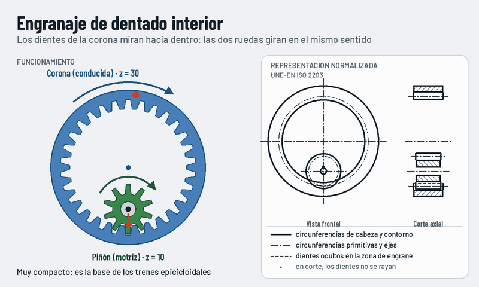

Engranaje de dentado interior
La corona tiene los dientes por dentro y el piñón engrana en su interior. A diferencia de dos ruedas exteriores, las dos giran en el mismo sentido.

Qué observar
- El piñón y la corona giran en el mismo sentido.
- El piñón da tres vueltas por cada vuelta de la corona.
- Los ejes quedan muy cerca: el conjunto es compacto.
Cómo se representa
- Corona: contorno exterior y circunferencia de cabeza (la interior) con línea gruesa.
- Circunferencias primitivas con trazo y punto, tangentes por dentro.
- En corte, los dientes no se rayan.
La cuenta
i = z₂ / z₁
Aquí i = 30 / 10 = 3.
Dónde lo encontramos
- Trenes epicicloidales: cajas automáticas y reductores planetarios.
- Bombas de engranajes internos.
- Mecanismos de giro de grúas.